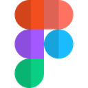
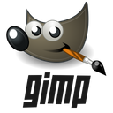

01. About
Hello! My name is Jack Nortje, a creative from Cape Town, South Africa. For the better half of 2021 I have been educating myself on Web Developement using online platforms and formus and have become fully emerged in the tech industry.
I have 4 years of experince working on production teams in the Cape Town Film Indusrty and spent a fair amount of time working overseas in both Australia and London. I have a passion for photography which was a career I was persuing before my transition and still love shooting whenever I get the chance.
I am currently focussing on all things front end as I have found myself gravitatting towards the design and functionaly of the projects I work on.
Technology I have been learning:


 .JS
.JS
Design platforms I have used:
- 
- 